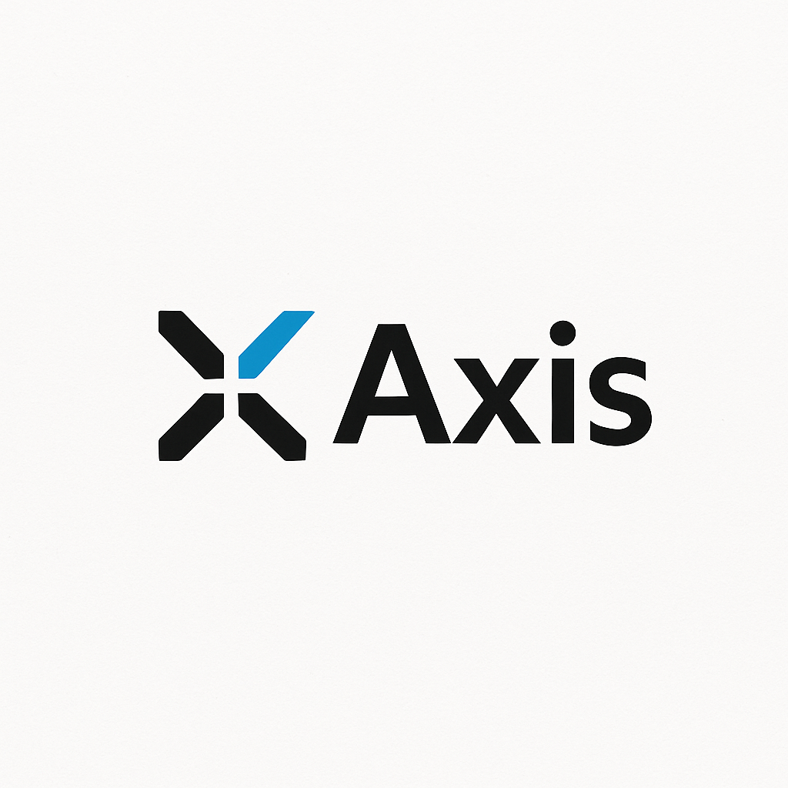

AxisCreate and execute inspection plans directly on your prints. Pick features, auto-balloon, OCR callouts, and export results—without leaving the blueprint.
Select features directly on the blueprint. Clean, numbered balloons that persist.
Auto-parse ± and +a−b. Bare numbers use editable default block tolerances by decimals.
Native PDF text when available, otherwise Tesseract with OpenCV pre-processing.
Pop out the print to a separate window for two-monitor workflows.
No database required. Files live with the blueprint and export cleanly.
Historical series and XmR capability from your results CSVs.
Built with PyInstaller. Portable, no Python required.